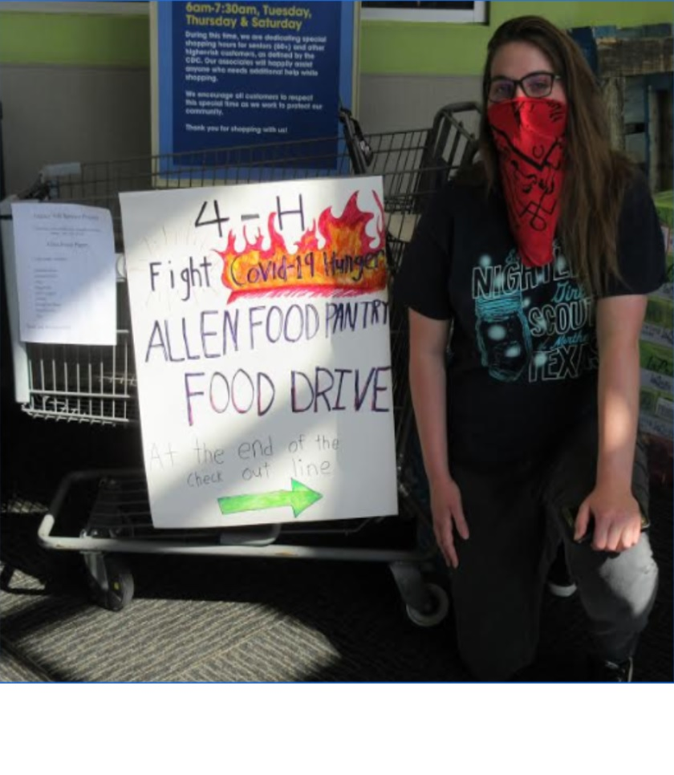
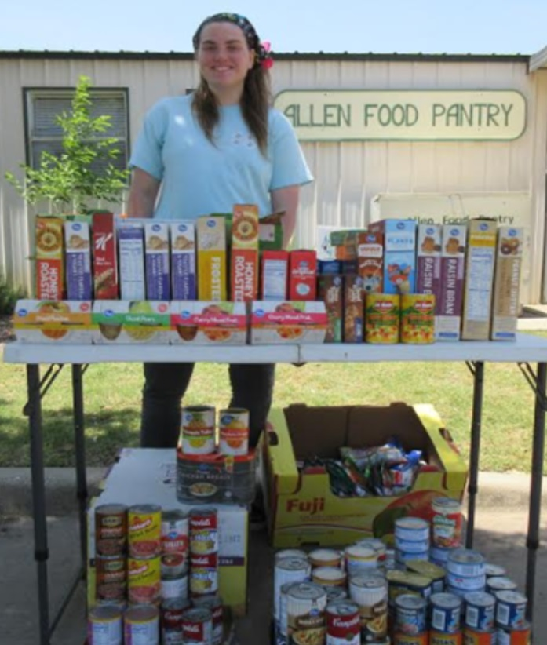

In 2020, our world suffered to a major crisis: the Corona Virus. Millions lost their lives, and millions more
lost their jobs. As corona was beginning to emerge in China, I led a project to collect food for the North Texas Food Bank and set
it up so my 4-H club could come volunteer with me at the North Texas Food Pantry to package donation boxes that are
sent to local families in need. At the end of the day, we had packed 525 boxes and a total of 8,596 meals.
